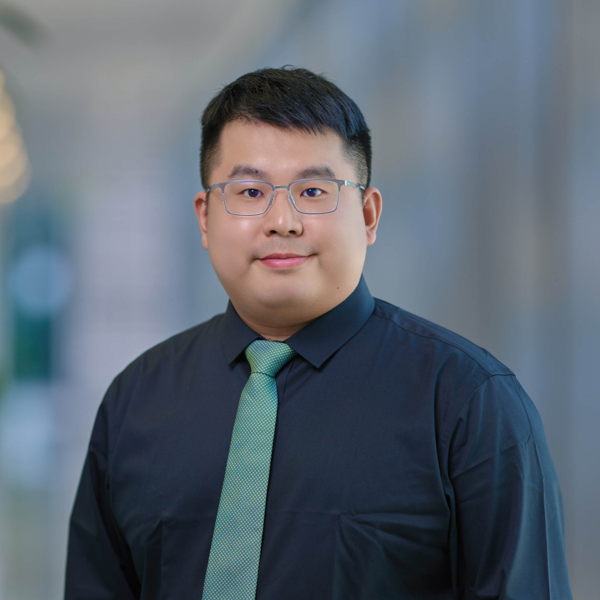

Computer, Electrical and Mathematical Sciences and Engineering (CEMSE) Division,
King Abdullah University of Science and Technology (KAUST)
Email: tao.ni[AT]kaust.edu.sa
Office: Building 4, 3237
Links
Teaching
 Spring 2026
Spring 2026
CS221P Network Security: MEng Cybersecurity, Minister of Interior (MoI), Saudi Arabia.
Tao Ni (Tony), Ph.D.
About Me. I am an Assistant Professor in Computer Science at the Computer, Electrical and Mathematical Sciences and Engineering (CEMSE) Division, King Abdullah University of Science and Technology (KAUST). I am also affiliated with the KAUST Center of Excellence for Generative AI (GenAI). Before that, I was a postdoctoral researcher at the City University of Hong Kong, where I earned my PhD. I completed my Master's degree from the Australian National University (ANU), and my Bachelor's degree from Shanghai Jiao Tong University (SJTU).
Research Interests. My research lies in the cross-discipline of cybersecurity and AI, with a primary focus on Building Secure, Reliable and Efficient AI-driven Systems to achieve trustworthy computing and confidential sensing in critical cyber-infrastructures. My current research interests include: (1) AI safety and AI for security (e.g., adversarial/backdoor in DNNs, LLM security and privacy, embodied AI), (2) System Security (e.g., AIoT, eXtended Reality (XR), and robotics security), and (3) Low-power and battery-free IoT in mobile computing.
Hiring. I am actively looking for self-motivated Ph.D./Master students, postdocs and research interns (with flexible start date) interested in working on cybersecurity. If you're passionate about these areas, please feel free to reach out through email and I will try to give you feedback as soon as possible. I highly suggest you to read this to know the admission process before sending me the email.
News
(Mar. 2026)
I will serve on the program committee of ACSAC'26.
(Mar. 2026)
I will serve on the program committee of RAID'26.
(Feb. 2026)
I'm glad to share our research about adversarial attacks and defenses in MBZUAI Nexus
Symposium on Security in The Age of AI. Thanks for the invitation and great arrangement.
(Jan. 2026)
I joined the Distinguished Reviewer Board of ACM Transactions on Sensor Networks
(TOSN).
(Jan. 2026)
I will serve on the program committee of EAI MobiQuitous'26.
(Dec. 2025)
One paper was accepted by USENIX Security'26. Congrats to Jiayimei and the team!
(Nov. 2025)
Two papers were accepted by IEEE TDSC. Congrats to Shuai and the team!
(Oct. 2025)
I'm glad to join the Editorial Board of IEEE Transactions on Services Computing
(TSC) as an Associate Editor.
(Oct. 2025)
I will serve on the program committee of ACM MobiSys'26.
(Oct. 2025)
I officially joined KAUST as an Assistant Professor in Computer Science. Students are welcome to reach out via email or visit my office.
(Aug. 2025)
I will serve on the program committee of USENIX Security'26.
(Aug. 2025)
I won the Best Presentation Award at Rising Star Forum of AIoTSys'25.
(Jul. 2025)
I am excited to be selected as an AIoTSys Rising Star.
(Jul. 2025)
I am excited to receive the
Outstanding Research Thesis Award
from CityUHK.
(Jul. 2025)
One paper was accepted by ACM UIST'25. Congrats to Rucheng and the team!
(Jul. 2025)
One extension paper was accepted by IEEE TMC.
(Jun. 2025)
One paper was accepted by MobiCom'25. Congrats to Zehua and the team!
(May 2025)
One paper was accepted by ICML'25. Congrats to Shuai and the team!
(Apr. 2025)
I will serve on the technical program committee of NDSS'26.
(Nov. 2024)
Our first XR security paper, VRecKey, was accepted by NDSS'25.
(Sep. 2024)
Invited to join the Youth Editorial Board of
Journal of Information and Intelligence.
(Sep. 2024)
Our CCS'23 paper was awarded
Cybersecurity Best Practical Paper Award
2024.
(Aug. 2024)
Our battery-free wireless sensing paper, REHSense, was accepted by MobiHoc'24.
(Jun. 2024)
Our poster wins the People's Choice ASSET Poster Award in
SIGMOBILE Asian Student Symposium on Emerging Technologies (ASSET),
Co-located with MobiSys'24 in Tokyo, Japan.
(May, 2024)
Invited to join the Youth Editorial Board of
Journal of Cybersecurity.
(Apr. 2024)
I was selected as an ACM MobiSys Rising Star 2024.
(Mar. 2024)
I successfully defended my thesis and completed my Ph.D. degree!
(Mar. 2024)
One paper was accepted by MobiSys'24. Congrats to Di and the team!
(Feb. 2024)
One paper was accepted by MobiCom'24. Congrats to Zehua and the team!
(Sep. 2023)
FPLogger was accpeted by CCS'23.
(Aug. 2023)
BankSnoop and XPorter were accepted by MobiCom'23.
(Jan. 2023)
One paper was accepted by IPSN'23. Congrats to Zehua and the team!
(Dec. 2022)
WISERS was accepted by IEEE S&P'23.
(Jul. 2022)
AppListener was accepted by USENIX Security'23.
(Jul. 2022)
One paper was accepted by UbiComp'22. Congrats to Yongliang and the team!